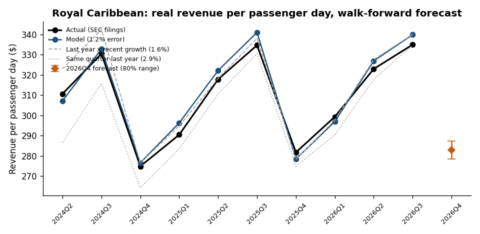
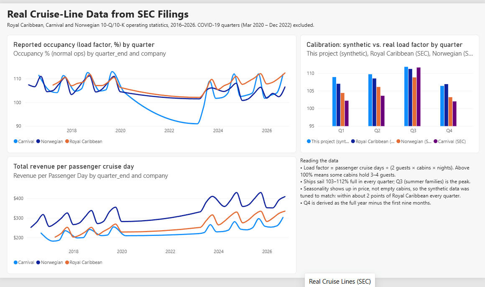
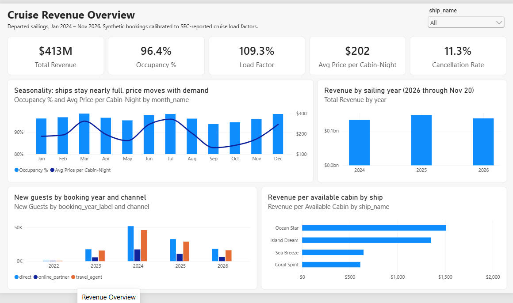
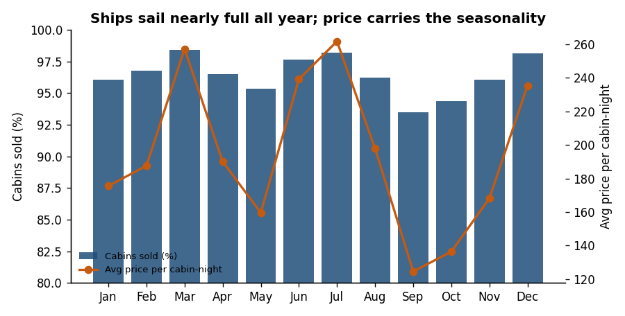
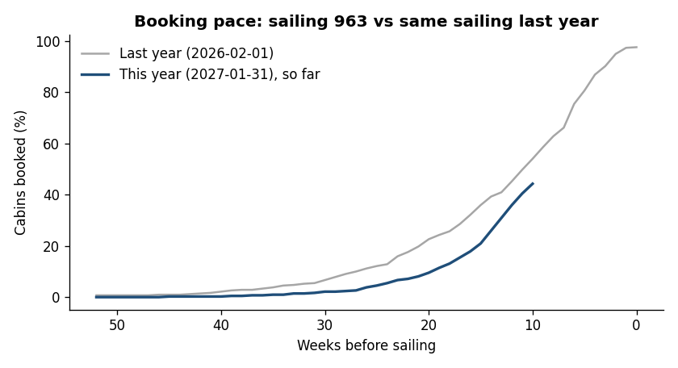
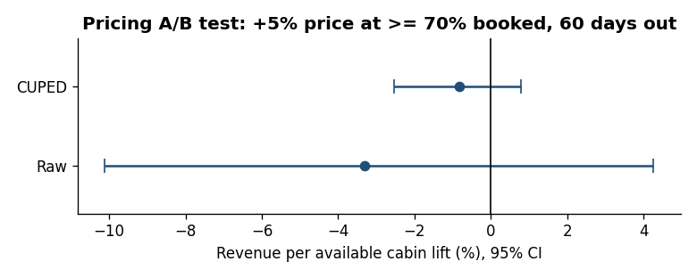
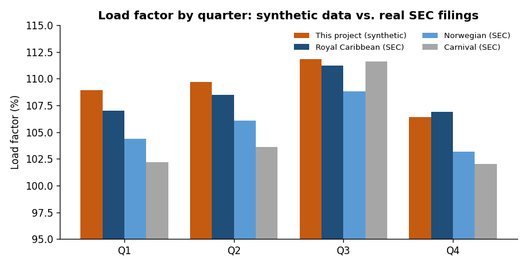

Cruise Cabin Pricing & Demand Forecasting
An end-to-end revenue management project for a cruise line, built on real public data from Royal Caribbean, Carnival and Norwegian. Ten years of their SEC filings drive a real-data forecast of Royal Caribbean's revenue per passenger day, and calibrate about 510,000 synthetic bookings. Cruise lines don't publish individual bookings, so the booking-level data is generated and tuned to match the real quarterly numbers. The project isn't affiliated with any of these companies.
What it does
- Pulls 102 quarters of real operating data (passengers, passenger cruise days, capacity, occupancy and revenue) from about 130 Royal Caribbean, Carnival and Norwegian 10-Q and 10-K filings on SEC EDGAR.
- Forecasts Royal Caribbean's real quarterly revenue per passenger day from those filings plus BLS airfare prices, the U.S. unemployment rate and University of Michigan consumer sentiment, tested one quarter at a time.
- Cleans the synthetic bookings with a pandas ETL pipeline (510,409 rows in, 509,320 out) and logs every data-quality rule it applies.
- Answers reporting questions in SQL with DuckDB: occupancy, revenue per cabin, new vs. repeat guests, and price by booking window.
- Forecasts final occupancy for every sailing and cabin category with XGBoost, tested on the most recent six months of sailings.
- Runs a pricing A/B test with CUPED variance reduction and a power analysis.
- Presents everything in a 6-page Power BI dashboard, and reruns the whole pipeline every week with GitHub Actions.
Results
- On real 2024–2026 quarters it never saw, the Royal Caribbean forecast has 1.2% error, vs. 1.6% for a trend baseline and 2.9% for same-quarter-last-year. Its settings are chosen only from earlier quarters, so the test never tuned the model. Q4 2026 forecast: $283 per passenger day (80% range $278–$287).
- Royal Caribbean's revenue per passenger day is up 27% since 2019 ($244 → $310), ahead of Carnival (+19%) and Norwegian (+20%), and it's the only one of the three with fuller ships than in 2019. With U.S. prices up about 29% over the same period, Royal Caribbean roughly kept pace with inflation while its competitors fell behind.
- The synthetic load factor is within about 2 points of Royal Caribbean's reported occupancy in every quarter (109.2% vs. 108.4% for the year).
- Booking forecast error of 3.3% vs. 8.0% for the last-year-pace baseline, 58% lower. Six months out, it's 4.0% vs. 17.6%.
- The pricing test (+5% when a cabin category is at least 70% booked 60 days out) showed no significant lift (p = 0.43), so the recommendation is not to roll it out broadly. CUPED cut the test's variance by 93%.







Where the data comes from
Every number below is public and traced to its source. Links go straight to the filings on the SEC's EDGAR system and to the government and university data pages, and full citations are under Sources and citations at the end of this page.
- DATA_SOURCES.md: the full methodology, field definitions, processing steps and references.
- SEC_FILINGS.md: all 102 SEC filings used (84 10-Qs and 18 10-Ks), each with a direct link and citation.
Companies
| Company | Ticker | SEC CIK | Main brands | Capacity metric | Quarters | Filings used |
|---|---|---|---|---|---|---|
| Royal Caribbean Cruises Ltd. | RCL | 0000884887 | Royal Caribbean International, Celebrity, Silversea | APCD | 39 (Q1 2017 – Q3 2026) | 30 10-Qs + 9 10-Ks |
| Norwegian Cruise Line Holdings Ltd. | NCLH | 0001513761 | Norwegian, Oceania, Regent Seven Seas | Capacity Days | 34 (Q1 2016 – Q3 2026) | 28 10-Qs + 6 10-Ks |
| Carnival Corporation & plc | CCL | 0000815097 | Carnival, Princess, Holland America, AIDA, Costa, P&O, Cunard, Seabourn | ALBDs | 29 (Aug 2016 – Aug 2026) | 26 10-Qs + 3 10-Ks |
102 company-quarters in total, from 102 SEC filings, 83 of them normal operations. The 19 quarters from March 2020 to December 2022, when sailings were suspended and then ramped back up, are flagged and left out of averages and models.
Sources
| Source | What it provides | Coverage | Links |
|---|---|---|---|
| SEC EDGAR 10-Q and 10-K filings | Operating statistics: passengers carried, passenger cruise days, capacity days, occupancy | 102 filings, 2016–2026 | Royal Caribbean · Norwegian · Carnival · all 102 filings |
| SEC XBRL company facts API | Total revenue per quarter | 2016 – Q3 2026 | Royal Caribbean · Norwegian · Carnival · API docs |
| U.S. Bureau of Labor Statistics | CPI for airline fares (CUSR0000SETG01) and the unemployment rate (LNS14000000) | Monthly, Jan 2015 – Oct 2026 | Airline fares CPI · Unemployment rate · BLS API |
| University of Michigan Surveys of Consumers | Index of Consumer Sentiment | Monthly, Jan 2014 – Nov 2026 | Surveys of Consumers · data file |
How the real dataset is built
- List and download every 10-Q and 10-K since 2016 for each company from SEC EDGAR, and cache them locally (about 250 MB).
- Parse the operating statistics tables: the rows for passengers carried, passenger cruise days (PCD), capacity (APCD, ALBDs or Capacity Days) and occupancy.
- Handle units: Carnival reports in millions in recent filings and thousands in older ones, so each row's unit label is read and the numbers are scaled. Older Carnival filings don't report PCD, so it's calculated as occupancy × capacity.
- Build the fourth quarter: annual reports only give full-year totals, so Q4 = full year (10-K) − the first nine months (Q3 10-Q year-to-date). This added 18 fourth quarters.
- Add revenue from the XBRL API, combining three revenue tags because the tag changed with the 2018 accounting rules.
- Check quality: drop any quarter whose reported occupancy doesn't equal PCD ÷ capacity within 2 points. This caught one misread row (Norwegian Q3 2022).
- Flag COVID-19 quarters and save one row per company per quarter.
What the data looks like: latest quarter for each company
| Company | Quarter ending | Passengers | Passenger cruise days | Capacity days | Occupancy | Revenue | Revenue per passenger day | Source |
|---|---|---|---|---|---|---|---|---|
| Royal Caribbean | Sep 30, 2026 | 2,676,480 | 16,692,392 | 14,844,688 | 112.4% | $5.59B | $334.94 | 10-Q |
| Norwegian | Sep 30, 2026 | 983,214 | 7,204,938 | 6,766,454 | 106.5% | $2.95B | $408.99 | 10-Q |
| Carnival | Aug 31, 2026 | 3.9M | 27.9M | 24.9M | 111.8% | $8.44B | $302.33 | 10-Q |
To check a number, open the filing and search for “Passenger Cruise Days” or “Occupancy”; the table is in Management’s Discussion and Analysis. Occupancy above 100% is normal for cruise lines: capacity counts two guests per cabin, and some cabins hold three or four.
What the real data shows: 2019 vs. the last four quarters
| Company | Occupancy | Revenue per passenger day | Change |
|---|---|---|---|
| Royal Caribbean | 108.1% → 109.7% (fuller) | $243.8 → $309.7 | +27% |
| Norwegian | 107.4% → 103.6% (less full) | $312.7 → $376.0 | +20% |
| Carnival | 107.7% → 105.1% (less full) | $225.3 → $267.9 | +19% |
| For reference: U.S. consumer prices (CPI-U) | +29% |
2019 averages use the four 2019 quarters (for example, Royal Caribbean’s Q1, Q2 and Q3 10-Qs and its 2019 10-K); the last four quarters run to Q3 2026. These are nominal dollars: U.S. consumer prices rose about 29% over the same period (BLS CPI-U, 2019 average vs. Oct 2025 – Sep 2026). So Royal Caribbean roughly kept pace with inflation, and it’s the only one of the three with fuller ships than in 2019, while Carnival and Norwegian fell behind inflation by about 8–9 points and sail less full. Royal Caribbean charged more and still filled its ships. That’s the work of pricing and revenue management.
How the real data is used
- Real-data forecast: predicts next quarter's revenue per passenger day from the same quarter last year, recent growth, seasonality, and the economic indicators lagged one quarter, so only information available beforehand is used. The model is a damped growth trend plus a ridge-regression adjustment, tested walk-forward on Q2 2024 – Q3 2026 (28 company-quarters, 10 of them Royal Caribbean), with its settings chosen by a nested walk-forward inside the training data.
- Calibration: the synthetic booking generator was tuned until its quarterly load factor matched the filings: Q1 108.9% vs. Royal Caribbean's 107.0%, Q2 109.7% vs. 108.5%, Q3 111.8% vs. 111.2%, Q4 106.4% vs. 106.9%.

Limits
- The SEC data is quarterly and company-wide. It doesn't show individual sailings, ships or cabin prices, which is why the booking-level analysis uses calibrated synthetic data.
- Revenue per passenger day (total revenue ÷ passenger cruise days) is a close stand-in for the companies' own Net Yield, but not identical.
- Carnival's fiscal quarters end in February, May, August and November, and are matched to the nearest calendar quarter.
- The guests' response to price in the A/B test is simulated, so it demonstrates the method rather than a real result.
Sources and citations
All sources were retrieved in November 2026. A citation for each of the 102 SEC filings is in SEC_FILINGS.md.
- Royal Caribbean Cruises Ltd. (2017–2026). Forms 10-Q and 10-K (CIK 0000884887). U.S. Securities and Exchange Commission. https://www.sec.gov/cgi-bin/browse-edgar?action=getcompany&CIK=0000884887&type=10-&dateb=&owner=include&count=40
- Norwegian Cruise Line Holdings Ltd. (2016–2026). Forms 10-Q and 10-K (CIK 0001513761). U.S. Securities and Exchange Commission. https://www.sec.gov/cgi-bin/browse-edgar?action=getcompany&CIK=0001513761&type=10-&dateb=&owner=include&count=40
- Carnival Corporation & plc (2016–2026). Forms 10-Q and 10-K (CIK 0000815097). U.S. Securities and Exchange Commission. https://www.sec.gov/cgi-bin/browse-edgar?action=getcompany&CIK=0000815097&type=10-&dateb=&owner=include&count=40
- Royal Caribbean Cruises Ltd. (2026). Form 10-Q for the quarterly period ended September 30, 2026. U.S. Securities and Exchange Commission. https://www.sec.gov/Archives/edgar/data/884887/000088488726000044/rcl-20260930.htm
- Norwegian Cruise Line Holdings Ltd. (2026). Form 10-Q for the quarterly period ended September 30, 2026. U.S. Securities and Exchange Commission. https://www.sec.gov/Archives/edgar/data/1513761/000110465926120217/nclh-20260930x10q.htm
- Carnival Corporation & plc (2026). Form 10-Q for the quarterly period ended August 31, 2026. U.S. Securities and Exchange Commission. https://www.sec.gov/Archives/edgar/data/815097/000081509726000107/ccl-20260831.htm
- Royal Caribbean Cruises Ltd. (2020). Form 10-K for the fiscal year ended December 31, 2019. U.S. Securities and Exchange Commission. https://www.sec.gov/Archives/edgar/data/884887/000088488720000009/rcl-20191231.htm
- U.S. Securities and Exchange Commission. EDGAR Application Programming Interfaces (submissions and XBRL company facts). https://www.sec.gov/search-filings/edgar-application-programming-interfaces
- U.S. Bureau of Labor Statistics. Consumer Price Index for All Urban Consumers: Airline Fares in U.S. City Average, Seasonally Adjusted (Series CUSR0000SETG01). https://data.bls.gov/timeseries/CUSR0000SETG01
- U.S. Bureau of Labor Statistics. Unemployment Rate, Seasonally Adjusted (Series LNS14000000), Current Population Survey. https://data.bls.gov/timeseries/LNS14000000
- U.S. Bureau of Labor Statistics. Consumer Price Index for All Urban Consumers (CPI-U): All Items in U.S. City Average (Series CUUR0000SA0). Used for the inflation comparison. https://data.bls.gov/timeseries/CUUR0000SA0
- University of Michigan, Surveys of Consumers. Index of Consumer Sentiment (monthly). https://www.sca.isr.umich.edu/